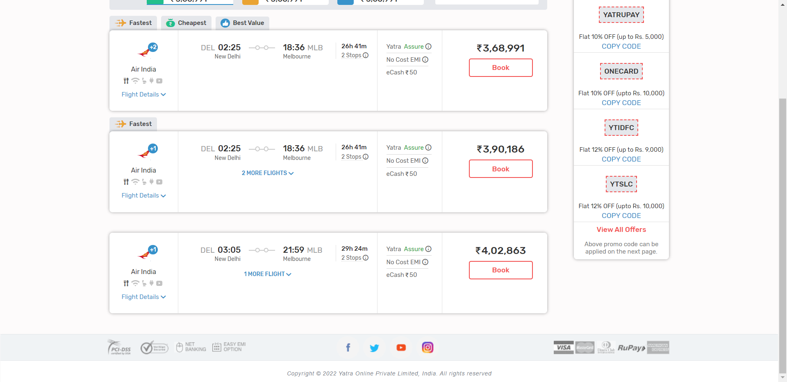
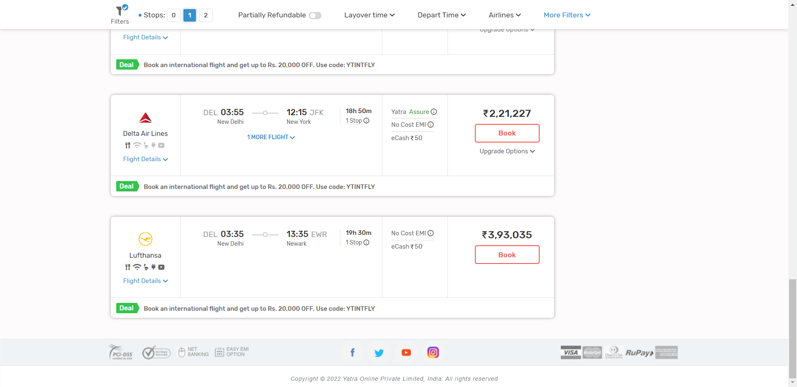

Report generated on 25-Feb-2022 at 03:24:02 by pytest-html v3.1.1
| Packages | {"pluggy": "1.0.0", "py": "1.11.0", "pytest": "6.2.5"} |
| Platform | Windows-10-10.0.19043-SP0 |
| Plugins | {"forked": "1.4.0", "html": "3.1.1", "metadata": "1.11.0", "xdist": "2.5.0"} |
| Python | 3.10.0 |
3 tests ran in 115.70 seconds.
(Un)check the boxes to filter the results.
0 passed, 0 skipped, 3 failed, 0 errors, 0 expected failures, 0 unexpected passes| Result | Test | Duration | Links |
|---|---|---|---|
| No results found. Try to check the filters | |||
| Failed | testcases/test_search_flights.py::TestSearchAndVerifyFilter::test_search_flights_1_stop_1___Mumbai____JFKdfgxzfb____25_02_2022____1_Stop__ | 20.85 | URL |
|
self = <testcases.test_search_flights.TestSearchAndVerifyFilter testMethod=test_search_flights_1_stop_1___Mumbai____JFKdfgxzfb____25_02_2022____1_Stop__> going_from_origin = 'Mumbai', going_to_dest = 'JFKdfgxzfb', going_depart_date = '25/02/2022', stop_filter = '1 Stop' @data(*Utils.read_data_from_csv("C:\\Users\\Hp\\PycharmProjects\\TestFrameworkMentor\\testdata\\test_csv_data.csv")) @unpack def test_search_flights_1_stop(self, going_from_origin, going_to_dest, going_depart_date, stop_filter): > search_flight = self.launch_page.searchFlight(going_from_origin, going_to_dest, going_depart_date) testcases\test_search_flights.py:35: _ _ _ _ _ _ _ _ _ _ _ _ _ _ _ _ _ _ _ _ _ _ _ _ _ _ _ _ _ _ _ _ _ _ _ _ _ _ _ _ pages\yatra_launch_page.py:86: in searchFlight self.enterDepartureDate(departuredate) pages\yatra_launch_page.py:69: in enterDepartureDate self.getDepartureDate().click() ..\..\AppData\Local\Programs\Python\Python310\lib\site-packages\selenium\webdriver\remote\webelement.py:80: in click self._execute(Command.CLICK_ELEMENT) ..\..\AppData\Local\Programs\Python\Python310\lib\site-packages\selenium\webdriver\remote\webelement.py:693: in _execute return self._parent.execute(command, params) ..\..\AppData\Local\Programs\Python\Python310\lib\site-packages\selenium\webdriver\remote\webdriver.py:418: in execute self.error_handler.check_response(response) _ _ _ _ _ _ _ _ _ _ _ _ _ _ _ _ _ _ _ _ _ _ _ _ _ _ _ _ _ _ _ _ _ _ _ _ _ _ _ _ self = <selenium.webdriver.remote.errorhandler.ErrorHandler object at 0x000001A196F54970> response = {'status': 400, 'value': '{"value":{"error":"element click intercepted","message":"element click intercepted: Element ...\n\\tRtlGetAppContainerNamedObjectPath [0x77C37A9E+286]\\n\\tRtlGetAppContainerNamedObjectPath [0x77C37A6E+238]\\n"}}'} def check_response(self, response: Dict[str, Any]) -> None: """ Checks that a JSON response from the WebDriver does not have an error. :Args: - response - The JSON response from the WebDriver server as a dictionary object. :Raises: If the response contains an error message. """ status = response.get('status', None) if not status or status == ErrorCode.SUCCESS: return value = None message = response.get("message", "") screen: str = response.get("screen", "") stacktrace = None if isinstance(status, int): value_json = response.get('value', None) if value_json and isinstance(value_json, str): import json try: value = json.loads(value_json) if len(value.keys()) == 1: value = value['value'] status = value.get('error', None) if not status: status = value.get("status", ErrorCode.UNKNOWN_ERROR) message = value.get("value") or value.get("message") if not isinstance(message, str): value = message message = message.get('message') else: message = value.get('message', None) except ValueError: pass exception_class: Type[WebDriverException] if status in ErrorCode.NO_SUCH_ELEMENT: exception_class = NoSuchElementException elif status in ErrorCode.NO_SUCH_FRAME: exception_class = NoSuchFrameException elif status in ErrorCode.NO_SUCH_WINDOW: exception_class = NoSuchWindowException elif status in ErrorCode.STALE_ELEMENT_REFERENCE: exception_class = StaleElementReferenceException elif status in ErrorCode.ELEMENT_NOT_VISIBLE: exception_class = ElementNotVisibleException elif status in ErrorCode.INVALID_ELEMENT_STATE: exception_class = InvalidElementStateException elif status in ErrorCode.INVALID_SELECTOR \ or status in ErrorCode.INVALID_XPATH_SELECTOR \ or status in ErrorCode.INVALID_XPATH_SELECTOR_RETURN_TYPER: exception_class = InvalidSelectorException elif status in ErrorCode.ELEMENT_IS_NOT_SELECTABLE: exception_class = ElementNotSelectableException elif status in ErrorCode.ELEMENT_NOT_INTERACTABLE: exception_class = ElementNotInteractableException elif status in ErrorCode.INVALID_COOKIE_DOMAIN: exception_class = InvalidCookieDomainException elif status in ErrorCode.UNABLE_TO_SET_COOKIE: exception_class = UnableToSetCookieException elif status in ErrorCode.TIMEOUT: exception_class = TimeoutException elif status in ErrorCode.SCRIPT_TIMEOUT: exception_class = TimeoutException elif status in ErrorCode.UNKNOWN_ERROR: exception_class = WebDriverException elif status in ErrorCode.UNEXPECTED_ALERT_OPEN: exception_class = UnexpectedAlertPresentException elif status in ErrorCode.NO_ALERT_OPEN: exception_class = NoAlertPresentException elif status in ErrorCode.IME_NOT_AVAILABLE: exception_class = ImeNotAvailableException elif status in ErrorCode.IME_ENGINE_ACTIVATION_FAILED: exception_class = ImeActivationFailedException elif status in ErrorCode.MOVE_TARGET_OUT_OF_BOUNDS: exception_class = MoveTargetOutOfBoundsException elif status in ErrorCode.JAVASCRIPT_ERROR: exception_class = JavascriptException elif status in ErrorCode.SESSION_NOT_CREATED: exception_class = SessionNotCreatedException elif status in ErrorCode.INVALID_ARGUMENT: exception_class = InvalidArgumentException elif status in ErrorCode.NO_SUCH_COOKIE: exception_class = NoSuchCookieException elif status in ErrorCode.UNABLE_TO_CAPTURE_SCREEN: exception_class = ScreenshotException elif status in ErrorCode.ELEMENT_CLICK_INTERCEPTED: exception_class = ElementClickInterceptedException elif status in ErrorCode.INSECURE_CERTIFICATE: exception_class = InsecureCertificateException elif status in ErrorCode.INVALID_COORDINATES: exception_class = InvalidCoordinatesException elif status in ErrorCode.INVALID_SESSION_ID: exception_class = InvalidSessionIdException elif status in ErrorCode.UNKNOWN_METHOD: exception_class = UnknownMethodException else: exception_class = WebDriverException if not value: value = response['value'] if isinstance(value, str): raise exception_class(value) if message == "" and 'message' in value: message = value['message'] screen = None # type: ignore[assignment] if 'screen' in value: screen = value['screen'] stacktrace = None st_value = value.get('stackTrace') or value.get('stacktrace') if st_value: if isinstance(st_value, str): stacktrace = st_value.split('\n') else: stacktrace = [] try: for frame in st_value: line = self._value_or_default(frame, 'lineNumber', '') file = self._value_or_default(frame, 'fileName', '<anonymous>') if line: file = "%s:%s" % (file, line) meth = self._value_or_default(frame, 'methodName', '<anonymous>') if 'className' in frame: meth = "%s.%s" % (frame['className'], meth) msg = " at %s (%s)" msg = msg % (meth, file) stacktrace.append(msg) except TypeError: pass if exception_class == UnexpectedAlertPresentException: alert_text = None if 'data' in value: alert_text = value['data'].get('text') elif 'alert' in value: alert_text = value['alert'].get('text') raise exception_class(message, screen, stacktrace, alert_text) # type: ignore[call-arg] # mypy is not smart enough here > raise exception_class(message, screen, stacktrace) E selenium.common.exceptions.ElementClickInterceptedException: Message: element click intercepted: Element <input data-role="none" readonly="readonly" type="text" autocomplete="false" name="flight_origin_date" placeholder=" " id="BE_flight_origin_date" class="custom-date-input BE_flight_origin_date"> is not clickable at point (250, 259). Other element would receive the click: <li class="ac_over">...</li> E (Session info: chrome=98.0.4758.102) E Stacktrace: E Backtrace: E Ordinal0 [0x004169A3+2582947] E Ordinal0 [0x003AA6D1+2139857] E Ordinal0 [0x002A3A98+1063576] E Ordinal0 [0x002D636F+1270639] E Ordinal0 [0x002D45B7+1263031] E Ordinal0 [0x002D220B+1253899] E Ordinal0 [0x002D0FF9+1249273] E Ordinal0 [0x002C6B53+1207123] E Ordinal0 [0x002E854C+1344844] E Ordinal0 [0x002C6524+1205540] E Ordinal0 [0x002E86A4+1345188] E Ordinal0 [0x002F834A+1409866] E Ordinal0 [0x002E8366+1344358] E Ordinal0 [0x002C5176+1200502] E Ordinal0 [0x002C6066+1204326] E GetHandleVerifier [0x005BBE02+1675858] E GetHandleVerifier [0x0067036C+2414524] E GetHandleVerifier [0x004ABB01+560977] E GetHandleVerifier [0x004AA8D3+556323] E Ordinal0 [0x003B020E+2163214] E Ordinal0 [0x003B5078+2183288] E Ordinal0 [0x003B51C0+2183616] E Ordinal0 [0x003BEE1C+2223644] E BaseThreadInitThunk [0x775DFA29+25] E RtlGetAppContainerNamedObjectPath [0x77C37A9E+286] E RtlGetAppContainerNamedObjectPath [0x77C37A6E+238] ..\..\AppData\Local\Programs\Python\Python310\lib\site-packages\selenium\webdriver\remote\errorhandler.py:243: ElementClickInterceptedException -----------------------------Captured stderr setup------------------------------ ====== WebDriver manager ====== Current google-chrome version is 98.0.4758 Get LATEST chromedriver version for 98.0.4758 google-chrome Driver [C:\Users\Hp\.wdm\drivers\chromedriver\win32\98.0.4758.102\chromedriver.exe] found in cache -------------------------------Captured log setup------------------------------- INFO WDM:logger.py:26 INFO WDM:logger.py:26 ====== WebDriver manager ====== INFO WDM:logger.py:26 Current google-chrome version is 98.0.4758 INFO WDM:logger.py:26 Get LATEST chromedriver version for 98.0.4758 google-chrome INFO WDM:logger.py:26 Driver [C:\Users\Hp\.wdm\drivers\chromedriver\win32\98.0.4758.102\chromedriver.exe] found in cache ------------------------------Captured stdout call------------------------------ 1 No match found for the search -------------------------------Captured log call-------------------------------- INFO LaunchPage:yatra_launch_page.py:55 Clicked on going to . INFO LaunchPage:yatra_launch_page.py:58 Typed text into going to field successfully. | |||
| Failed | testcases/test_search_flights.py::TestSearchAndVerifyFilter::test_search_flights_1_stop_2___New____MLB____27_02_2022____2_Stops__ | 36.64 | URL |
|
 self = <testcases.test_search_flights.TestSearchAndVerifyFilter testMethod=test_search_flights_1_stop_2___New____MLB____27_02_2022____2_Stops__> going_from_origin = 'New', going_to_dest = 'MLB', going_depart_date = '27/02/2022', stop_filter = '2 Stops' @data(*Utils.read_data_from_csv("C:\\Users\\Hp\\PycharmProjects\\TestFrameworkMentor\\testdata\\test_csv_data.csv")) @unpack def test_search_flights_1_stop(self, going_from_origin, going_to_dest, going_depart_date, stop_filter): search_flight = self.launch_page.searchFlight(going_from_origin, going_to_dest, going_depart_date) # scrolling the page self.launch_page.page_scroll() search_flight.filter_flight_by_stop(stop_filter) all_stops = search_flight.get_search_flight_results() self.log.info(len(all_stops)) > self.ut.UtilitiesList(all_stops, stop_filter) testcases\test_search_flights.py:41: _ _ _ _ _ _ _ _ _ _ _ _ _ _ _ _ _ _ _ _ _ _ _ _ _ _ _ _ _ _ _ _ _ _ _ _ _ _ _ _ utilities\utils.py:19: in UtilitiesList self.assert_all() ..\..\AppData\Local\Programs\Python\Python310\lib\site-packages\softest\case.py:139: in assert_all self.fail(''.join(failure_output)) E AssertionError: ++++ soft assert failure details follow below ++++ E E ++++++++++++++++++++++++++++++++++++++++++++++++++++++++++++++++++++++ E The following 3 failures were found in "wrapper" (utilities.utils.Utils): E +----------------------+----------------------+----------------------+ E Failure 1 ("wrapper" method) E +----------------------+----------------------+----------------------+ E Traceback (most recent call last): E File "C:\Users\Hp\PycharmProjects\TestFrameworkMentor\utilities\utils.py", line 13, in UtilitiesList E self.soft_assert(self.assertEqual, stop.text, value) E File "C:\Users\Hp\PycharmProjects\TestFrameworkMentor\testcases\test_search_flights.py", line 41, in test_search_flights_1_stop E self.ut.UtilitiesList(all_stops, stop_filter) E File "C:\Users\Hp\AppData\Local\Programs\Python\Python310\lib\site-packages\ddt.py", line 191, in wrapper E return func(self, *args, **kwargs) E File "C:\Users\Hp\AppData\Local\Programs\Python\Python310\lib\site-packages\softest\case.py", line 62, in soft_assert E assert_method(*arguments, **keywords) E File "C:\Users\Hp\AppData\Local\Programs\Python\Python310\Lib\unittest\case.py", line 837, in assertEqual E assertion_func(first, second, msg=msg) E File "C:\Users\Hp\AppData\Local\Programs\Python\Python310\Lib\unittest\case.py", line 1217, in assertMultiLineEqual E self.fail(self._formatMessage(msg, standardMsg)) E File "C:\Users\Hp\AppData\Local\Programs\Python\Python310\Lib\unittest\case.py", line 667, in fail E raise self.failureException(msg) E AssertionError: '' != '2 Stops' E + 2 Stops E E -+ [1/3] +- E E +----------------------+----------------------+----------------------+ E Failure 2 ("wrapper" method) E +----------------------+----------------------+----------------------+ E Traceback (most recent call last): E File "C:\Users\Hp\PycharmProjects\TestFrameworkMentor\utilities\utils.py", line 13, in UtilitiesList E self.soft_assert(self.assertEqual, stop.text, value) E File "C:\Users\Hp\PycharmProjects\TestFrameworkMentor\testcases\test_search_flights.py", line 41, in test_search_flights_1_stop E self.ut.UtilitiesList(all_stops, stop_filter) E File "C:\Users\Hp\AppData\Local\Programs\Python\Python310\lib\site-packages\ddt.py", line 191, in wrapper E return func(self, *args, **kwargs) E File "C:\Users\Hp\AppData\Local\Programs\Python\Python310\lib\site-packages\softest\case.py", line 62, in soft_assert E assert_method(*arguments, **keywords) E File "C:\Users\Hp\AppData\Local\Programs\Python\Python310\Lib\unittest\case.py", line 837, in assertEqual E assertion_func(first, second, msg=msg) E File "C:\Users\Hp\AppData\Local\Programs\Python\Python310\Lib\unittest\case.py", line 1217, in assertMultiLineEqual E self.fail(self._formatMessage(msg, standardMsg)) E File "C:\Users\Hp\AppData\Local\Programs\Python\Python310\Lib\unittest\case.py", line 667, in fail E raise self.failureException(msg) E AssertionError: '' != '2 Stops' E + 2 Stops E E -+ [2/3] +- E E +----------------------+----------------------+----------------------+ E Failure 3 ("wrapper" method) E +----------------------+----------------------+----------------------+ E Traceback (most recent call last): E File "C:\Users\Hp\PycharmProjects\TestFrameworkMentor\utilities\utils.py", line 13, in UtilitiesList E self.soft_assert(self.assertEqual, stop.text, value) E File "C:\Users\Hp\PycharmProjects\TestFrameworkMentor\testcases\test_search_flights.py", line 41, in test_search_flights_1_stop E self.ut.UtilitiesList(all_stops, stop_filter) E File "C:\Users\Hp\AppData\Local\Programs\Python\Python310\lib\site-packages\ddt.py", line 191, in wrapper E return func(self, *args, **kwargs) E File "C:\Users\Hp\AppData\Local\Programs\Python\Python310\lib\site-packages\softest\case.py", line 62, in soft_assert E assert_method(*arguments, **keywords) E File "C:\Users\Hp\AppData\Local\Programs\Python\Python310\Lib\unittest\case.py", line 837, in assertEqual E assertion_func(first, second, msg=msg) E File "C:\Users\Hp\AppData\Local\Programs\Python\Python310\Lib\unittest\case.py", line 1217, in assertMultiLineEqual E self.fail(self._formatMessage(msg, standardMsg)) E File "C:\Users\Hp\AppData\Local\Programs\Python\Python310\Lib\unittest\case.py", line 667, in fail E raise self.failureException(msg) E AssertionError: '' != '2 Stops' E + 2 Stops E E -+ [3/3] +- -----------------------------Captured stderr setup------------------------------ ====== WebDriver manager ====== Current google-chrome version is 98.0.4758 Get LATEST chromedriver version for 98.0.4758 google-chrome Driver [C:\Users\Hp\.wdm\drivers\chromedriver\win32\98.0.4758.102\chromedriver.exe] found in cache -------------------------------Captured log setup------------------------------- INFO WDM:logger.py:26 INFO WDM:logger.py:26 ====== WebDriver manager ====== INFO WDM:logger.py:26 Current google-chrome version is 98.0.4758 INFO WDM:logger.py:26 Get LATEST chromedriver version for 98.0.4758 google-chrome INFO WDM:logger.py:26 Driver [C:\Users\Hp\.wdm\drivers\chromedriver\win32\98.0.4758.102\chromedriver.exe] found in cache ------------------------------Captured stdout call------------------------------ 1 Melbourne (MLB) Melbourne Regional United States 391 The text is: 2 Stops test pass The text is: 2 Stops test pass The text is: test fail The text is: test fail The text is: 2 Stops test pass The text is: test fail -------------------------------Captured log call-------------------------------- INFO LaunchPage:yatra_launch_page.py:55 Clicked on going to . INFO LaunchPage:yatra_launch_page.py:58 Typed text into going to field successfully. WARNING SearchFlightResults:search_flights_result_page.py:50 Please provide the valid filter option INFO TestSearchAndVerifyFilter:test_search_flights.py:40 6 | |||
| Failed | testcases/test_search_flights.py::TestSearchAndVerifyFilter::test_search_flights_1_stop_3___New____JFK____03_03_2022____1_Stop__ | 54.88 | URL |
|
 self = <testcases.test_search_flights.TestSearchAndVerifyFilter testMethod=test_search_flights_1_stop_3___New____JFK____03_03_2022____1_Stop__> going_from_origin = 'New', going_to_dest = 'JFK', going_depart_date = '03/03/2022', stop_filter = '1 Stop' @data(*Utils.read_data_from_csv("C:\\Users\\Hp\\PycharmProjects\\TestFrameworkMentor\\testdata\\test_csv_data.csv")) @unpack def test_search_flights_1_stop(self, going_from_origin, going_to_dest, going_depart_date, stop_filter): search_flight = self.launch_page.searchFlight(going_from_origin, going_to_dest, going_depart_date) # scrolling the page self.launch_page.page_scroll() search_flight.filter_flight_by_stop(stop_filter) all_stops = search_flight.get_search_flight_results() self.log.info(len(all_stops)) > self.ut.UtilitiesList(all_stops, stop_filter) testcases\test_search_flights.py:41: _ _ _ _ _ _ _ _ _ _ _ _ _ _ _ _ _ _ _ _ _ _ _ _ _ _ _ _ _ _ _ _ _ _ _ _ _ _ _ _ utilities\utils.py:19: in UtilitiesList self.assert_all() ..\..\AppData\Local\Programs\Python\Python310\lib\site-packages\softest\case.py:139: in assert_all self.fail(''.join(failure_output)) E AssertionError: ++++ soft assert failure details follow below ++++ E E ++++++++++++++++++++++++++++++++++++++++++++++++++++++++++++++++++++++ E The following 11 failures were found in "wrapper" (utilities.utils.Utils): E +----------------------+----------------------+----------------------+ E Failure 1 ("wrapper" method) E +----------------------+----------------------+----------------------+ E Traceback (most recent call last): E File "C:\Users\Hp\PycharmProjects\TestFrameworkMentor\utilities\utils.py", line 13, in UtilitiesList E self.soft_assert(self.assertEqual, stop.text, value) E File "C:\Users\Hp\PycharmProjects\TestFrameworkMentor\testcases\test_search_flights.py", line 41, in test_search_flights_1_stop E self.ut.UtilitiesList(all_stops, stop_filter) E File "C:\Users\Hp\AppData\Local\Programs\Python\Python310\lib\site-packages\ddt.py", line 191, in wrapper E return func(self, *args, **kwargs) E File "C:\Users\Hp\AppData\Local\Programs\Python\Python310\lib\site-packages\softest\case.py", line 62, in soft_assert E assert_method(*arguments, **keywords) E File "C:\Users\Hp\AppData\Local\Programs\Python\Python310\Lib\unittest\case.py", line 837, in assertEqual E assertion_func(first, second, msg=msg) E File "C:\Users\Hp\AppData\Local\Programs\Python\Python310\Lib\unittest\case.py", line 1217, in assertMultiLineEqual E self.fail(self._formatMessage(msg, standardMsg)) E File "C:\Users\Hp\AppData\Local\Programs\Python\Python310\Lib\unittest\case.py", line 667, in fail E raise self.failureException(msg) E AssertionError: '' != '1 Stop' E + 1 Stop E E -+ [1/11] +- E E +----------------------+----------------------+----------------------+ E Failure 2 ("wrapper" method) E +----------------------+----------------------+----------------------+ E Traceback (most recent call last): E File "C:\Users\Hp\PycharmProjects\TestFrameworkMentor\utilities\utils.py", line 13, in UtilitiesList E self.soft_assert(self.assertEqual, stop.text, value) E File "C:\Users\Hp\PycharmProjects\TestFrameworkMentor\testcases\test_search_flights.py", line 41, in test_search_flights_1_stop E self.ut.UtilitiesList(all_stops, stop_filter) E File "C:\Users\Hp\AppData\Local\Programs\Python\Python310\lib\site-packages\ddt.py", line 191, in wrapper E return func(self, *args, **kwargs) E File "C:\Users\Hp\AppData\Local\Programs\Python\Python310\lib\site-packages\softest\case.py", line 62, in soft_assert E assert_method(*arguments, **keywords) E File "C:\Users\Hp\AppData\Local\Programs\Python\Python310\Lib\unittest\case.py", line 837, in assertEqual E assertion_func(first, second, msg=msg) E File "C:\Users\Hp\AppData\Local\Programs\Python\Python310\Lib\unittest\case.py", line 1217, in assertMultiLineEqual E self.fail(self._formatMessage(msg, standardMsg)) E File "C:\Users\Hp\AppData\Local\Programs\Python\Python310\Lib\unittest\case.py", line 667, in fail E raise self.failureException(msg) E AssertionError: '' != '1 Stop' E + 1 Stop E E -+ [2/11] +- E E +----------------------+----------------------+----------------------+ E Failure 3 ("wrapper" method) E +----------------------+----------------------+----------------------+ E Traceback (most recent call last): E File "C:\Users\Hp\PycharmProjects\TestFrameworkMentor\utilities\utils.py", line 13, in UtilitiesList E self.soft_assert(self.assertEqual, stop.text, value) E File "C:\Users\Hp\PycharmProjects\TestFrameworkMentor\testcases\test_search_flights.py", line 41, in test_search_flights_1_stop E self.ut.UtilitiesList(all_stops, stop_filter) E File "C:\Users\Hp\AppData\Local\Programs\Python\Python310\lib\site-packages\ddt.py", line 191, in wrapper E return func(self, *args, **kwargs) E File "C:\Users\Hp\AppData\Local\Programs\Python\Python310\lib\site-packages\softest\case.py", line 62, in soft_assert E assert_method(*arguments, **keywords) E File "C:\Users\Hp\AppData\Local\Programs\Python\Python310\Lib\unittest\case.py", line 837, in assertEqual E assertion_func(first, second, msg=msg) E File "C:\Users\Hp\AppData\Local\Programs\Python\Python310\Lib\unittest\case.py", line 1217, in assertMultiLineEqual E self.fail(self._formatMessage(msg, standardMsg)) E File "C:\Users\Hp\AppData\Local\Programs\Python\Python310\Lib\unittest\case.py", line 667, in fail E raise self.failureException(msg) E AssertionError: '' != '1 Stop' E + 1 Stop E E -+ [3/11] +- E E +----------------------+----------------------+----------------------+ E Failure 4 ("wrapper" method) E +----------------------+----------------------+----------------------+ E Traceback (most recent call last): E File "C:\Users\Hp\PycharmProjects\TestFrameworkMentor\utilities\utils.py", line 13, in UtilitiesList E self.soft_assert(self.assertEqual, stop.text, value) E File "C:\Users\Hp\PycharmProjects\TestFrameworkMentor\testcases\test_search_flights.py", line 41, in test_search_flights_1_stop E self.ut.UtilitiesList(all_stops, stop_filter) E File "C:\Users\Hp\AppData\Local\Programs\Python\Python310\lib\site-packages\ddt.py", line 191, in wrapper E return func(self, *args, **kwargs) E File "C:\Users\Hp\AppData\Local\Programs\Python\Python310\lib\site-packages\softest\case.py", line 62, in soft_assert E assert_method(*arguments, **keywords) E File "C:\Users\Hp\AppData\Local\Programs\Python\Python310\Lib\unittest\case.py", line 837, in assertEqual E assertion_func(first, second, msg=msg) E File "C:\Users\Hp\AppData\Local\Programs\Python\Python310\Lib\unittest\case.py", line 1217, in assertMultiLineEqual E self.fail(self._formatMessage(msg, standardMsg)) E File "C:\Users\Hp\AppData\Local\Programs\Python\Python310\Lib\unittest\case.py", line 667, in fail E raise self.failureException(msg) E AssertionError: '' != '1 Stop' E + 1 Stop E E -+ [4/11] +- E E +----------------------+----------------------+----------------------+ E Failure 5 ("wrapper" method) E +----------------------+----------------------+----------------------+ E Traceback (most recent call last): E File "C:\Users\Hp\PycharmProjects\TestFrameworkMentor\utilities\utils.py", line 13, in UtilitiesList E self.soft_assert(self.assertEqual, stop.text, value) E File "C:\Users\Hp\PycharmProjects\TestFrameworkMentor\testcases\test_search_flights.py", line 41, in test_search_flights_1_stop E self.ut.UtilitiesList(all_stops, stop_filter) E File "C:\Users\Hp\AppData\Local\Programs\Python\Python310\lib\site-packages\ddt.py", line 191, in wrapper E return func(self, *args, **kwargs) E File "C:\Users\Hp\AppData\Local\Programs\Python\Python310\lib\site-packages\softest\case.py", line 62, in soft_assert E assert_method(*arguments, **keywords) E File "C:\Users\Hp\AppData\Local\Programs\Python\Python310\Lib\unittest\case.py", line 837, in assertEqual E assertion_func(first, second, msg=msg) E File "C:\Users\Hp\AppData\Local\Programs\Python\Python310\Lib\unittest\case.py", line 1217, in assertMultiLineEqual E self.fail(self._formatMessage(msg, standardMsg)) E File "C:\Users\Hp\AppData\Local\Programs\Python\Python310\Lib\unittest\case.py", line 667, in fail E raise self.failureException(msg) E AssertionError: '' != '1 Stop' E + 1 Stop E E -+ [5/11] +- E E +----------------------+----------------------+----------------------+ E Failure 6 ("wrapper" method) E +----------------------+----------------------+----------------------+ E Traceback (most recent call last): E File "C:\Users\Hp\PycharmProjects\TestFrameworkMentor\utilities\utils.py", line 13, in UtilitiesList E self.soft_assert(self.assertEqual, stop.text, value) E File "C:\Users\Hp\PycharmProjects\TestFrameworkMentor\testcases\test_search_flights.py", line 41, in test_search_flights_1_stop E self.ut.UtilitiesList(all_stops, stop_filter) E File "C:\Users\Hp\AppData\Local\Programs\Python\Python310\lib\site-packages\ddt.py", line 191, in wrapper E return func(self, *args, **kwargs) E File "C:\Users\Hp\AppData\Local\Programs\Python\Python310\lib\site-packages\softest\case.py", line 62, in soft_assert E assert_method(*arguments, **keywords) E File "C:\Users\Hp\AppData\Local\Programs\Python\Python310\Lib\unittest\case.py", line 837, in assertEqual E assertion_func(first, second, msg=msg) E File "C:\Users\Hp\AppData\Local\Programs\Python\Python310\Lib\unittest\case.py", line 1217, in assertMultiLineEqual E self.fail(self._formatMessage(msg, standardMsg)) E File "C:\Users\Hp\AppData\Local\Programs\Python\Python310\Lib\unittest\case.py", line 667, in fail E raise self.failureException(msg) E AssertionError: '' != '1 Stop' E + 1 Stop E E -+ [6/11] +- E E +----------------------+----------------------+----------------------+ E Failure 7 ("wrapper" method) E +----------------------+----------------------+----------------------+ E Traceback (most recent call last): E File "C:\Users\Hp\PycharmProjects\TestFrameworkMentor\utilities\utils.py", line 13, in UtilitiesList E self.soft_assert(self.assertEqual, stop.text, value) E File "C:\Users\Hp\PycharmProjects\TestFrameworkMentor\testcases\test_search_flights.py", line 41, in test_search_flights_1_stop E self.ut.UtilitiesList(all_stops, stop_filter) E File "C:\Users\Hp\AppData\Local\Programs\Python\Python310\lib\site-packages\ddt.py", line 191, in wrapper E return func(self, *args, **kwargs) E File "C:\Users\Hp\AppData\Local\Programs\Python\Python310\lib\site-packages\softest\case.py", line 62, in soft_assert E assert_method(*arguments, **keywords) E File "C:\Users\Hp\AppData\Local\Programs\Python\Python310\Lib\unittest\case.py", line 837, in assertEqual E assertion_func(first, second, msg=msg) E File "C:\Users\Hp\AppData\Local\Programs\Python\Python310\Lib\unittest\case.py", line 1217, in assertMultiLineEqual E self.fail(self._formatMessage(msg, standardMsg)) E File "C:\Users\Hp\AppData\Local\Programs\Python\Python310\Lib\unittest\case.py", line 667, in fail E raise self.failureException(msg) E AssertionError: '' != '1 Stop' E + 1 Stop E E -+ [7/11] +- E E +----------------------+----------------------+----------------------+ E Failure 8 ("wrapper" method) E +----------------------+----------------------+----------------------+ E Traceback (most recent call last): E File "C:\Users\Hp\PycharmProjects\TestFrameworkMentor\utilities\utils.py", line 13, in UtilitiesList E self.soft_assert(self.assertEqual, stop.text, value) E File "C:\Users\Hp\PycharmProjects\TestFrameworkMentor\testcases\test_search_flights.py", line 41, in test_search_flights_1_stop E self.ut.UtilitiesList(all_stops, stop_filter) E File "C:\Users\Hp\AppData\Local\Programs\Python\Python310\lib\site-packages\ddt.py", line 191, in wrapper E return func(self, *args, **kwargs) E File "C:\Users\Hp\AppData\Local\Programs\Python\Python310\lib\site-packages\softest\case.py", line 62, in soft_assert E assert_method(*arguments, **keywords) E File "C:\Users\Hp\AppData\Local\Programs\Python\Python310\Lib\unittest\case.py", line 837, in assertEqual E assertion_func(first, second, msg=msg) E File "C:\Users\Hp\AppData\Local\Programs\Python\Python310\Lib\unittest\case.py", line 1217, in assertMultiLineEqual E self.fail(self._formatMessage(msg, standardMsg)) E File "C:\Users\Hp\AppData\Local\Programs\Python\Python310\Lib\unittest\case.py", line 667, in fail E raise self.failureException(msg) E AssertionError: '' != '1 Stop' E + 1 Stop E E -+ [8/11] +- E E +----------------------+----------------------+----------------------+ E Failure 9 ("wrapper" method) E +----------------------+----------------------+----------------------+ E Traceback (most recent call last): E File "C:\Users\Hp\PycharmProjects\TestFrameworkMentor\utilities\utils.py", line 13, in UtilitiesList E self.soft_assert(self.assertEqual, stop.text, value) E File "C:\Users\Hp\PycharmProjects\TestFrameworkMentor\testcases\test_search_flights.py", line 41, in test_search_flights_1_stop E self.ut.UtilitiesList(all_stops, stop_filter) E File "C:\Users\Hp\AppData\Local\Programs\Python\Python310\lib\site-packages\ddt.py", line 191, in wrapper E return func(self, *args, **kwargs) E File "C:\Users\Hp\AppData\Local\Programs\Python\Python310\lib\site-packages\softest\case.py", line 62, in soft_assert E assert_method(*arguments, **keywords) E File "C:\Users\Hp\AppData\Local\Programs\Python\Python310\Lib\unittest\case.py", line 837, in assertEqual E assertion_func(first, second, msg=msg) E File "C:\Users\Hp\AppData\Local\Programs\Python\Python310\Lib\unittest\case.py", line 1217, in assertMultiLineEqual E self.fail(self._formatMessage(msg, standardMsg)) E File "C:\Users\Hp\AppData\Local\Programs\Python\Python310\Lib\unittest\case.py", line 667, in fail E raise self.failureException(msg) E AssertionError: '' != '1 Stop' E + 1 Stop E E -+ [9/11] +- E E +----------------------+----------------------+----------------------+ E Failure 10 ("wrapper" method) E +----------------------+----------------------+----------------------+ E Traceback (most recent call last): E File "C:\Users\Hp\PycharmProjects\TestFrameworkMentor\utilities\utils.py", line 13, in UtilitiesList E self.soft_assert(self.assertEqual, stop.text, value) E File "C:\Users\Hp\PycharmProjects\TestFrameworkMentor\testcases\test_search_flights.py", line 41, in test_search_flights_1_stop E self.ut.UtilitiesList(all_stops, stop_filter) E File "C:\Users\Hp\AppData\Local\Programs\Python\Python310\lib\site-packages\ddt.py", line 191, in wrapper E return func(self, *args, **kwargs) E File "C:\Users\Hp\AppData\Local\Programs\Python\Python310\lib\site-packages\softest\case.py", line 62, in soft_assert E assert_method(*arguments, **keywords) E File "C:\Users\Hp\AppData\Local\Programs\Python\Python310\Lib\unittest\case.py", line 837, in assertEqual E assertion_func(first, second, msg=msg) E File "C:\Users\Hp\AppData\Local\Programs\Python\Python310\Lib\unittest\case.py", line 1217, in assertMultiLineEqual E self.fail(self._formatMessage(msg, standardMsg)) E File "C:\Users\Hp\AppData\Local\Programs\Python\Python310\Lib\unittest\case.py", line 667, in fail E raise self.failureException(msg) E AssertionError: '' != '1 Stop' E + 1 Stop E E -+ [10/11] +- E E +----------------------+----------------------+----------------------+ E Failure 11 ("wrapper" method) E +----------------------+----------------------+----------------------+ E Traceback (most recent call last): E File "C:\Users\Hp\PycharmProjects\TestFrameworkMentor\utilities\utils.py", line 13, in UtilitiesList E self.soft_assert(self.assertEqual, stop.text, value) E File "C:\Users\Hp\PycharmProjects\TestFrameworkMentor\testcases\test_search_flights.py", line 41, in test_search_flights_1_stop E self.ut.UtilitiesList(all_stops, stop_filter) E File "C:\Users\Hp\AppData\Local\Programs\Python\Python310\lib\site-packages\ddt.py", line 191, in wrapper E return func(self, *args, **kwargs) E File "C:\Users\Hp\AppData\Local\Programs\Python\Python310\lib\site-packages\softest\case.py", line 62, in soft_assert E assert_method(*arguments, **keywords) E File "C:\Users\Hp\AppData\Local\Programs\Python\Python310\Lib\unittest\case.py", line 837, in assertEqual E assertion_func(first, second, msg=msg) E File "C:\Users\Hp\AppData\Local\Programs\Python\Python310\Lib\unittest\case.py", line 1217, in assertMultiLineEqual E self.fail(self._formatMessage(msg, standardMsg)) E File "C:\Users\Hp\AppData\Local\Programs\Python\Python310\Lib\unittest\case.py", line 667, in fail E raise self.failureException(msg) E AssertionError: '' != '1 Stop' E + 1 Stop E E -+ [11/11] +- -----------------------------Captured stderr setup------------------------------ ====== WebDriver manager ====== Current google-chrome version is 98.0.4758 Get LATEST chromedriver version for 98.0.4758 google-chrome Driver [C:\Users\Hp\.wdm\drivers\chromedriver\win32\98.0.4758.102\chromedriver.exe] found in cache -------------------------------Captured log setup------------------------------- INFO WDM:logger.py:26 INFO WDM:logger.py:26 ====== WebDriver manager ====== INFO WDM:logger.py:26 Current google-chrome version is 98.0.4758 INFO WDM:logger.py:26 Get LATEST chromedriver version for 98.0.4758 google-chrome INFO WDM:logger.py:26 Driver [C:\Users\Hp\.wdm\drivers\chromedriver\win32\98.0.4758.102\chromedriver.exe] found in cache ------------------------------Captured stdout call------------------------------ 1 New York (JFK) John F Kennedy United States 391 The text is: 1 Stop test pass The text is: 1 Stop test pass The text is: test fail The text is: 1 Stop test pass The text is: test fail The text is: test fail The text is: 1 Stop test pass The text is: test fail The text is: test fail The text is: test fail The text is: 1 Stop test pass The text is: 1 Stop test pass The text is: test fail The text is: test fail The text is: 1 Stop test pass The text is: test fail The text is: 1 Stop test pass The text is: test fail The text is: 1 Stop test pass The text is: test fail The text is: 1 Stop test pass -------------------------------Captured log call-------------------------------- INFO LaunchPage:yatra_launch_page.py:55 Clicked on going to . INFO LaunchPage:yatra_launch_page.py:58 Typed text into going to field successfully. WARNING SearchFlightResults:search_flights_result_page.py:39 selected flights with 1 stop. INFO TestSearchAndVerifyFilter:test_search_flights.py:40 21 | |||